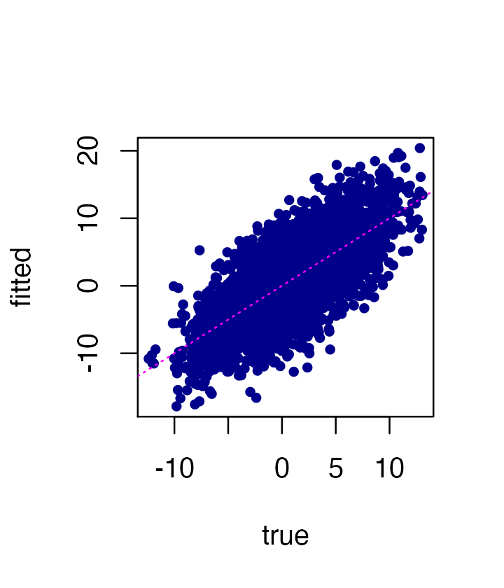

Introduction to mr.mash
Peter Carbonetto & Fabio Morgante
2023-05-16
Source:vignettes/mr_mash_intro.Rmd
mr_mash_intro.RmdThe aim of this vignette is to introduce the basic steps of a mr.mash analysis, fitting the mr.mash model then using it to make predictions.
First, we set the seed and load the mr.mash R package.
library(mr.mash.alpha)
set.seed(123)Simulate a data set with 1000 individuals, 100 predictors and 5 responses. The 20 causal variables (randomly sampled from the total 100) have equal effects across responses and explain 50% of the total per-response variance.
n <- 1000
p <- 100
p_causal <- 20
r <- 5
out <- simulate_mr_mash_data(n, p, p_causal, r, pve=0.5, B_cor=1,
B_scale=1, X_cor=0, X_scale=1, V_cor=0)Split the data into a training set and a test set.
Ytrain <- out$Y[-c(1:200),]
Xtrain <- out$X[-c(1:200),]
Ytest <- out$Y[c(1:200),]
Xtest <- out$X[c(1:200),]To run mr.mash, we need to first specify the covariances in the mixture-of-normals prior. In this example, we use a mixture of “canonical” covariances. However, “data-driven” covariances can also be used – here’s an example of how to compute these matrices.
univ_sumstats <- compute_univariate_sumstats(Xtrain, Ytrain,
standardize=TRUE, standardize.response=FALSE)
grid <- autoselect.mixsd(univ_sumstats, mult=sqrt(2))^2
S0 <- compute_canonical_covs(ncol(Ytrain), singletons=TRUE,
hetgrid=c(0, 0.25, 0.5, 0.75, 1))
S0 <- expand_covs(S0, grid, zeromat=TRUE)Now we are ready to fit a mr.mash model to the training data.
fit <- mr.mash(Xtrain, Ytrain, S0, update_V=TRUE, verbose=FALSE)Compare the “fitted” values of Y against the true Y in the training set.
plot(fit$fitted,Ytrain,pch = 20,col = "darkblue",xlab = "true",
ylab = "fitted")
abline(a = 0,b = 1,col = "magenta",lty = "dotted")
Now predict Y in test examples using the fitted model. Compare the predicted Ys to the true values:
Ytest_est <- predict(fit,Xtest)
plot(Ytest_est,Ytest,pch = 20,col = "darkblue",xlab = "true",
ylab = "predicted")
abline(a = 0,b = 1,col = "magenta",lty = "dotted")
Compute prediction accuracy more formally, in terms of \(R^2\) (the maximum value would be 0.5 in this case).